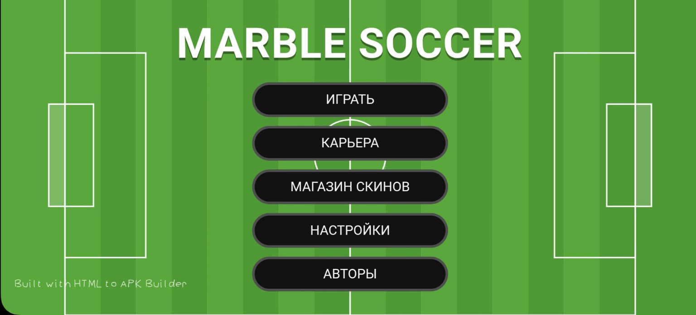
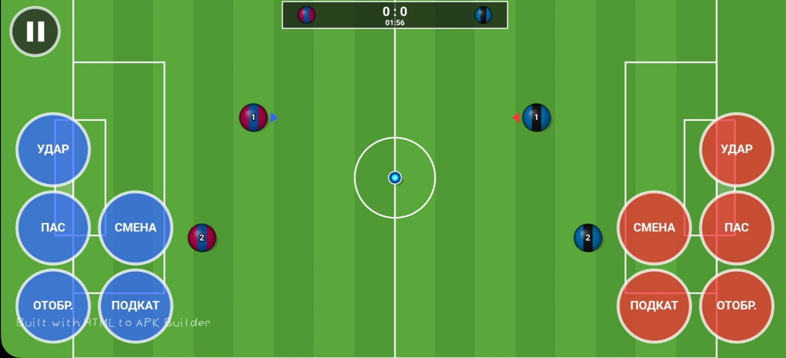

MARBLE SOCCER 2
Футбол на шариках. Создай игрока, выбери команду и выходи на поле!


Об игре
MARBLE SOCCER 2 — футбольная игра с управлением игроками-шариками. В этой версии доступны матчи, карьера футболиста, таблица бомбардиров и настройки ориентации экрана.
Платформа: Android и браузер
Версия: 4.0
Прогресс карьеры в браузерной версии сохраняется в браузере на устройстве игрока.